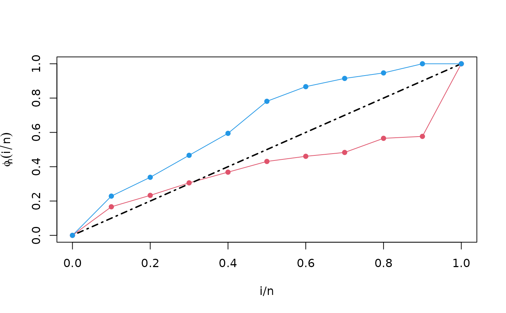
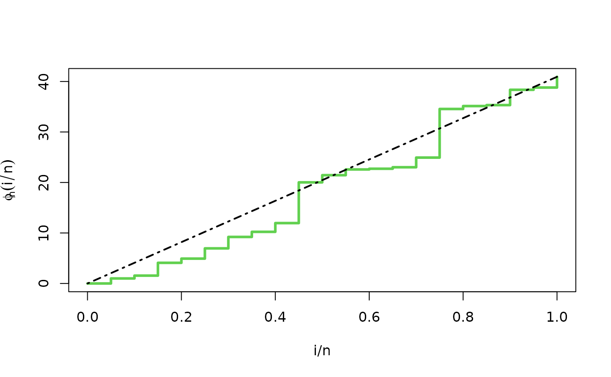
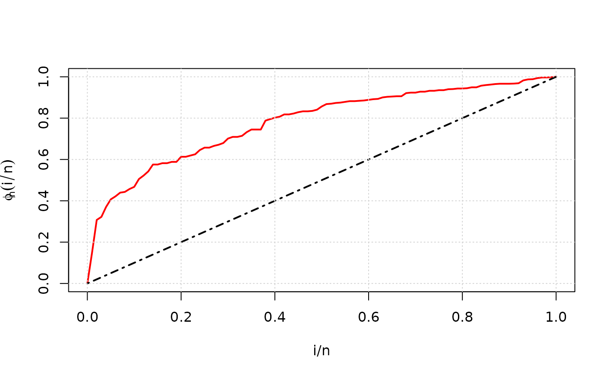

![[Experimental]](figures/lifecycle-experimental.svg)
Draws a TTT plot of an EmpiricalTTT object, one for each strata.
TTT plots are graphed in the same order in which they appear in the list
element strata or in the list element phi_n of
the EmpiricalTTT object.
Usage
# S3 method for EmpiricalTTT
plot(
x,
add = FALSE,
grid = FALSE,
type = "l",
pch = 1,
xlab = "i/n",
ylab = expression(phi[n](i/n)),
...
)Arguments
- x
an object of class
EmpiricalTTT.- add
logical. If TRUE,
plot.EmpiricalTTTadd a TTT plot to an already existing plot.- grid
logical. If
TRUE, plot appears with grid.- type
character string (length 1 vector) or vector of 1-character strings indicating the type of plot for each TTT graph. See
plot.- pch
numeric (integer). A vector of plotting characters or symbols when
type = "p". Seepoints.- xlab, ylab
titles for x and y axes, as in
plot.- ...
further arguments passed to
matplot. See the examples and Details section for further information.
Details
This method is based on matplot. Our function
sets some default values for graphic parameters: type = "l", pch = 1,
xlab = "i/n" and ylab = expression(phi[n](i/n)). This arguments
can be modified by the user.
Author
Jaime Mosquera Gutiérrez, jmosquerag@unal.edu.co
Examples
library(EstimationTools)
#--------------------------------------------------------------------------------
# First example: Scaled empirical TTT from 'mgus1' data from 'survival' package.
TTT_1 <- TTTE_Analytical(Surv(stop, event == 'pcm') ~1, method = 'cens',
data = mgus1, subset=(start == 0))
plot(TTT_1, type = "p")
#--------------------------------------------------------------------------------
# Second example: Scaled empirical TTT using a factor variable with 'aml' data
# from 'survival' package.
TTT_2 <- TTTE_Analytical(Surv(time, status) ~ x, method = "cens", data = aml)
plot(TTT_2, type = "l", lty = c(1,1), col = c(2,4))
plot(TTT_2, add = TRUE, type = "p", lty = c(1,1), col = c(2,4), pch = 16)

#--------------------------------------------------------------------------------
# Third example: Non-scaled empirical TTT without a factor (arbitrarily simulated
# data).
y <- rweibull(n=20, shape=1, scale=pi)
TTT_3 <- TTTE_Analytical(y ~ 1, scaled = FALSE)
plot(TTT_3, type = "s", col = 3, lwd = 3)

#--------------------------------------------------------------------------------
# Fourth example: TTT plot for 'carbone' data from 'AdequacyModel' package
if (!require('AdequacyModel')) install.packages('AdequacyModel')
#> Loading required package: AdequacyModel
library(AdequacyModel)
data(carbone)
TTT_4 <- TTTE_Analytical(response = carbone, scaled = TRUE)
plot(TTT_4, type = "l", col = "red", lwd = 2, grid = TRUE)

#--------------------------------------------------------------------------------